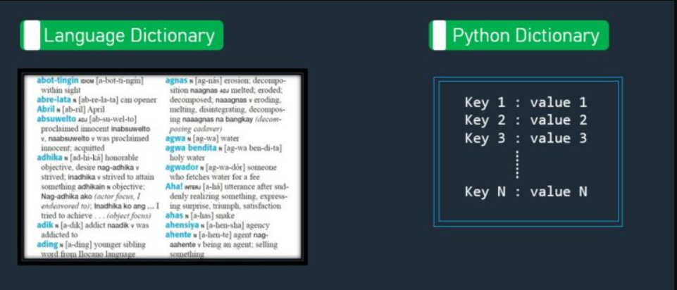

At first glance, you can think of a dictionary in general terms as you would a dictionary at your home or in the library, similar to the Language Dictionary shown below:

In this Tagalog-English dictionary, you can look up the meanings (and pronunciation) of words. The dictionary associates a word (or 2) with a description. This is an example of the associations you can make between a dictionary key (word in this example) with a value, which in this case is the usage, the pronunciation, and the definition in English. In Python, the definition of the dictionary would be as follows:
myDict = {"abot tingin" : "IDIOM [a-bot-ti-ngin] within sight",
"abre lata" : "N [ab-re-la-ta] can opener",
"key" : "value" }
The key is separated from the value by a colon ( : ). In this example, the dictionary is defined as a string for the key and a string for the entire value. Keys must be unique, immutable (can’t change) and, starting with Python 3.7, are ordered, meaning that you can access dictionary items by index value. The value part of the key-value pair can be any data type, including another dictionary.
The following code shows how to access the dictionary, the value associated with a key (2 ways), the key-value pair for an item, all keys, and all values:
# print the dictionary in default format
print(str(myDict))
# print the value by specifying the key
print(str(myDict["abre lata"]))
# print the value by specifying the key using the dictionary's get() function
key = "abre lata"
item = myDict.get(key)
print(item)
# loop through all items in the dictionary
for key, value in myDict.items():
print(key, ": ", value)
# print all keys in the dictionary
print(myDict.keys())
# print all values in the dictionary
print(myDict.values())
The result is as follows:
{'abot tingin': 'IDIOM [a-bot-ti-ngin] within sight', 'abre lata': 'N [abr-re-la-ta] can opener', 'key': 'value'}
N [abr-re-la-ta] can opener
N [abr-re-la-ta] can opener
abot tingin : IDIOM [a-bot-ti-ngin] within sight
abre lata : N [abr-re-la-ta] can opener
key : value
dict_keys(['abot tingin', 'abre lata', 'key'])
dict_values(['IDIOM [a-bot-ti-ngin] within sight', 'N [abr-re-la-ta] can opener', 'value'])
Because keys are immutable, you must delete a key by popping it out of the dictionary, which also deletes the entire item:
# delete the item associated with the key 'abre lata'
myDict.pop('abre lata')
for key, value in myDict.items():
print(key, ": ", value)
print(myDict.keys())
print(myDict.values())
results in a dictionary without the 'abre lata' item:
{'abot tingin': 'IDIOM [a-bot-ti-ngin] within sight', 'key': 'value'}
The advantage of using a dictionary is that you can access a value by its key. For large dictionaries, key access provides much higher performance than scanning a list to locate a value. The underlying concept is called hashing, which is taking keys and converting (hashing) them into pointers to the associated values. Searching the keys are optimized and the pointers enable access to values directly after locating the key. Hashing algorithms are interesting to the computer scientist, but hidden from you as a Python programmer. You just take advantage of the dictionary as a faster means to locating values using keys, at least until you need to learn more.
There is another case for using a dictionary. You can nest a large dictionary and nest smaller dictionaries to provide access to values by name. Recall in our example, that the value consisted of different kinds of information; specifically, the value contained usage and pronunciation, in addition to the definition. It is possible to represent this compound value by another dictionary, as in the following example:
my_nested_dict = {"abot tingin" : {"usage": "IDIOM", "pronunciation": "[a-bot-ti-ngin]", "definition": "within sight"},
"abre lata" : {"usage": "N", "pronunciation": "[abr-re-la-ta]", "definition": "can opener"},
"key" : {"usage": "usage_value", "pronunciation": "pronunciation_value", "definition": "definition_value"}}
# loop through all items in the dictionary
for key, value in my_nested_dict.items():
# print all keys in the dictionary with just the definition
print(key, ":", value.get("definition"))
The nested dictionary uses the same syntax as any other Python dictionary. In this case, as the outer dictionary is looped over, each definition from the nested dictionary is accessed by its unique key using the get() function. Although each of the inner dictionaries has the same key names, each dictionary is separate and the keys are unique to just that dictionary.
For review and practice, see Python Dictionaries. For built-in functions on dictionaries, see Python Dictionary Methods.
A glossary entry is a word in italic font, whose definition is nearby in the text. Create a new project, CreatePythonGlossary, to Create a dictionary with a glossary entry as the key and a description as the value Input the key and value to create a dictionary entry Repeat until the user chooses to stop Print the dictionary in such a way that you can easily take the copy of the populated data structure and use it to seed the next run of your program. (In a later module, you will save the structure to a file and read it into your program.)
Test your procedure thoroughly before entering too many glossary entries! Create your glossary from all modules in the course for your later reference.
Answer the following questions:
my_cars("Model")?